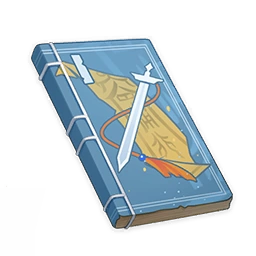

Liyue · Books & Literature
Legend of the Lone Sword
A four-volume Liyue martial-arts novel follows Jin the Seventy-Second's revenge to an intentionally unresolved cliffhanger.

A Liyue novel set outside elemental Teyvat
Legend of the Lone Sword is a four-volume martial-arts novel described as popular in Liyue Harbor. Its opening note says that its world has no elemental energy or alchemy. That repeated frame identifies the Jin story as fiction inside Teyvat, not a hidden account of Liyue's history.
The collection does not name an author. Its volumes follow one revenge plot, but the fourth stops at a cliffhanger before Jin reaches the person he is seeking.
Volume I: the last of a sword school
The first volume opens three days after a nameless swordsman destroys Jin's school. Jin's master and junior have died in the mountain snow, and he takes the name Jin the Seventy-Second because he is the school's last survivor. The opening turns that number into both a name and a reminder of everyone he has lost.
On the road to Tupi Village, a cart driver answers Jin's request for a ride with a proverb. Jin kills him for being pointlessly talkative and takes the cart. The episode establishes the protagonist as dangerous and merciless; the novel does not initially present his revenge as a clean, heroic quest.
Volume II: blood reaches Tupi Village
Volume II brings Jin to Tupi Village, which the book places below barren mountains at the end of a single ancient road. He has come for revenge and seeks the village chief, a feared man whose name and past remain unknown to the villagers. The text gives the name Tupi an in-story gloss about burning away vanity to reach truth.
Before Jin reaches the chief's house, he kills 362 of the chief's men and the dog guarding the gate; the narration darkly emphasizes that he cooks and eats the dog. The chief finally draws his sword, and the volume ends as their confrontation begins. The extravagant count and grotesque aside are part of the novel's heightened, sometimes macabre voice.
Volume III: the chief points beyond the village
Volume III resolves the duel by revealing a weapon Jin has kept hidden: a broken incense burner in his left hand. The chief fails to notice it, and Jin strikes him with the censer, ending the fight. The scene makes ingenuity—not only sword skill—the deciding move.
As he dies, the chief tells Jin that the person he seeks is in the barren mountains beyond the village. Jin has won the encounter but has not completed his revenge. The novel's central pursuit moves out of Tupi rather than reaching its conclusion here.
Volume IV: the chase ends in a glimpse
Wounded and limping, Jin enters the barren mountains. Two figures watch him from a cliff: a bone-thin old woman with cold, jade-blue eyes and a corpulent old man who passes without disturbing the withered plants. The text gives them striking descriptions but no names or explanation of their relationship to Jin's target.
Jin collapses on the gravel. As darkness takes him, he catches sight of the hem of azure-blue skirts and half-recognizes the figure. The volume ends there: it does not identify the person, explain the watchers, or show whether Jin survives and resumes the pursuit.
Its myth belongs to the novel's world
Although the recurring premise rules out elemental energy and alchemy, Volume IV also includes folk tales about mountains made from slices of the Celestial Emperor's blade and soaked in the Earth Mother's tears. Those mythic references enrich the novel's own setting; they do not cancel its stated fictional frame or prove that the story describes actual Liyue cosmology.
The useful distinction is between the book's in-world premise and the myths told by characters within that premise. Neither layer turns Jin, Tupi Village, or the revenge plot into confirmed historical people and events.
Keep the similarly titled books separate
Legend of the Lone Sword is the four-volume Liyue martial-arts novel about Jin. It is not A Legend of Sword, the six-volume Inazuman publication written by Xingqiu under the pen name Zhenyu and illustrated by Albedo under the name Calx. Their shared words do not indicate a shared story or authorship.
Read the Lone Sword as an incomplete piece of popular fiction: it establishes Jin's loss, his violence, and the trail into the mountains, then leaves the revenge plot suspended. The text does not disclose the target's identity or provide an ending, so those gaps should remain open.
This is an original CoreGG reading guide, not an official HoYoverse article or a reproduction of the game text. Source links below identify the records used so you can check the original context.
Sources & references
Check these sources for the original game text and reference trail.